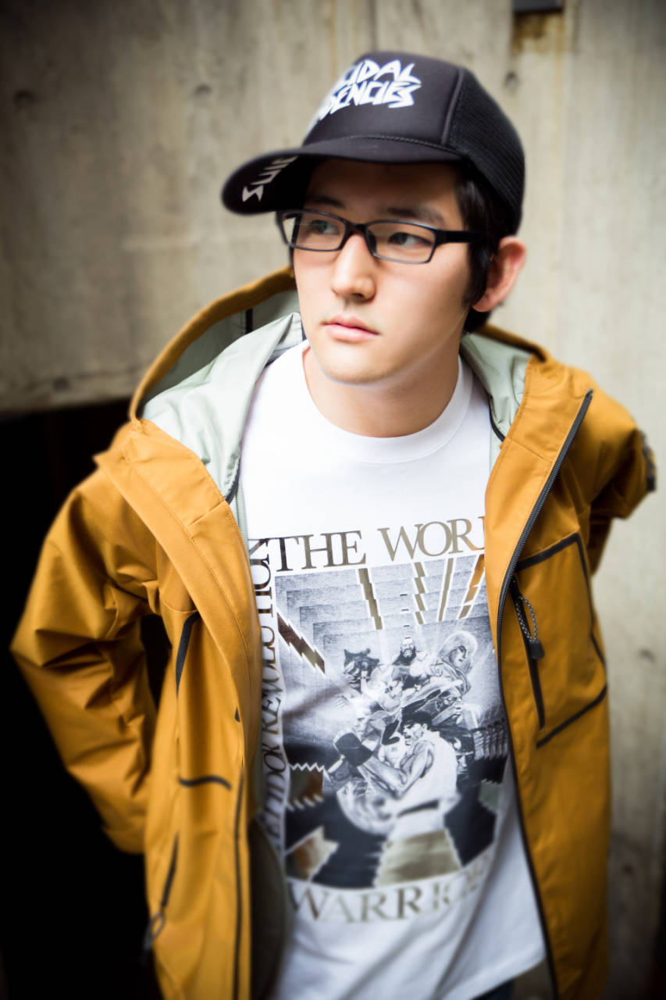
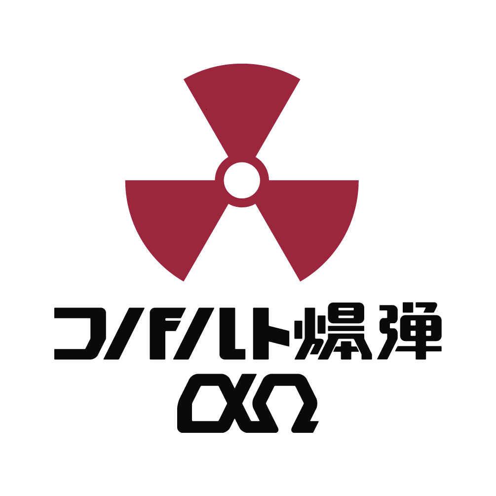
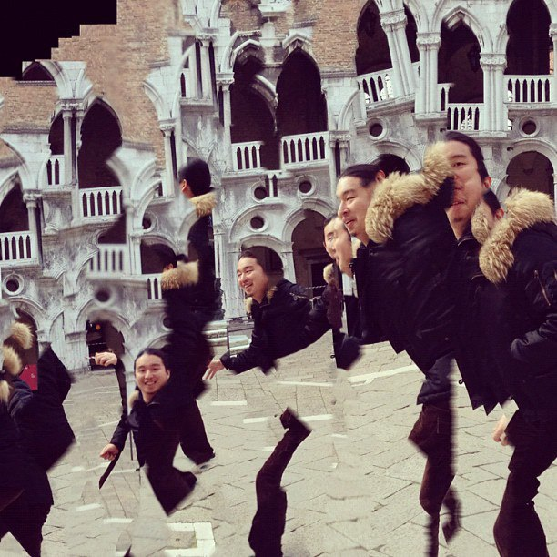
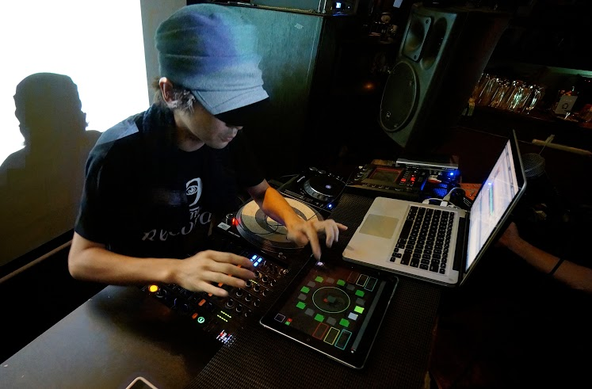
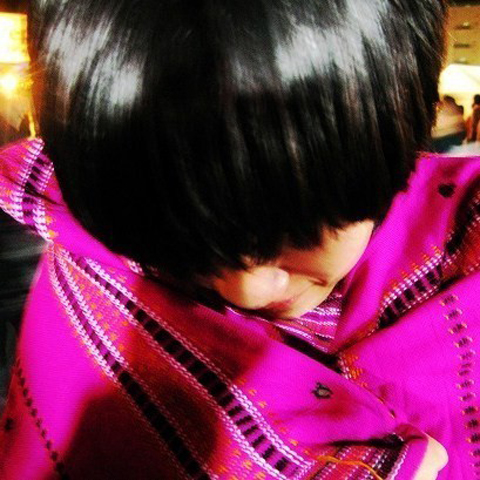
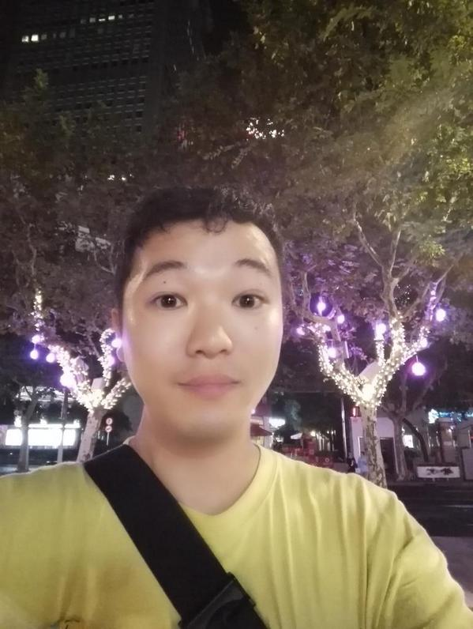

秋葉原 club MOGRA
東京都台東区秋葉原3-11 B1F
11月24日 （月・祝日）
18:00 - 22:00
メイカーとクラバーの溝を秋葉原MOGRAで縮めたい！！そうすれば未来のクラブイベントはもっと面白くなるはずだ！！！！！！
そんな思いを元に11月24日（月・祝日） お台場で開催されるあのイベント の非公式アフタークラブイベントとして万を持して開催します。

入場料 3000円 (１ドリンクつき)
受け付けで以下のものを提示した場合、500円割り引きします
- Maker Fair Tokyo 2014 落選通知メール
- Arduino, Raspberry Pi
- はんだゴテ
- LED
- プロジェクター
- レーザー
- コスプレ (小さい着替えテントあり)
DJ/LIVE
dj wild party
18歳でキャリアをスタート。当初のブレイクコアから徐々にジャンルの幅を広げていき、頭角をあらわしていく。 DOMMUNEのプログラム『MP3 KILLED CD STARS』出演時に、エレクトロ、ヒップホップ、アイドルポップ、アニソン、ゲーム音楽、ブレイクコア、歌謡まで貪り尽くすウルトラ・ボーダーレスなDJを披露し一躍注目を集める。
2012年に入ると３月に自身の初メジャーリリースとなる『MOGRA MIX VOL.1 mixed by DJWILDPARTY』をEMIよりリリースする他、 7月にはLAで開催されたANIME EXPOに出演し2000人のオーディエンスをロックし大きなニュースとなった。
その後、覆面ユニット、OL Killerに電撃加入を果たし、FUJI ROCK FESTIVAL 2012に出演。さらに香港で開催された秋葉東京に参加するなど、その活動を世界へと広げている。
コバルト爆弾αΩ
多種多様なオタク（思想家,留学生,映画秘宝購読者,漫画,アニメ,エンジニア,インタラクション・エディトリアル・グラフィックデザイナー,同人作家,作曲家,楽器開発者,都市農業家,ランドスケープ・アーキテクト,映像ディレクター,一級建築士,ガンダム,図書館）によるギーク×ナード集団。
これまでDENPA!!!、秋葉原MOGRA、Maker Faire Tokyo、混浴温泉世界、大学祭等のイベントに出演。
お気入りのマルチメディア（音楽・映画・アニメ・漫画・書物）を各自が自作アプリで編集・再生するDVJ、”AZUMA HITOMI”の演奏に連動したインタラクティブVJ、”未来美術家 遠藤一郎”、”現代美術家 愛☆まどんな”に向けたライブペイント向けのシステム開発、秋葉系VJソフト”あのタグで待ってる”の発表、Maltine Records “MP3 Killed the CD Star?”への楽曲提供や、でんぱ組.inc “夢眠ねむ”、”AZUMA HITOMI”へのRemix提供といった爆撃を行ってきた。
TORIENA × きゅんくん × LuminouShare

Gameboy実機のみを使ってトラックメイクとライブ活動を行っているチップチューン女子TORIENAと、着るロボットを作るロボティクスファッションクリエイターきゅんくん、そしてLEDの光り方の操作をシェアすることで誰でも簡単に美しい・かっこいい光り方を手に入れられるWebサービスLuminouShareがコラボレーション。
yako_flapper3
2010年よりトラックメーカーのGo-qualiaとともにオンラインレーベル"Bunkai-Kei records"を主宰。分解系でのリリース・企画のプロデュースをするほか、「OUT OF DOTS」や「Re-Union」「大ネットレーベル祭」などのイベントオーガナイズやDJとして活動。
分解系レコーズ「CreativeCommandsCompilationData」のリリースにて2012年に文化庁メディア芸術祭審査委員会推薦作品賞を受賞。
またVJとしてWOMB ADVENTURE、sonar sound tokyo、Road to ULTRA等VJ出演、VJソフトmotion dive.tokyo performance package映像ディレクション、VJバトル"VisualJam vol.2"優勝。
2002年よりメディアデザインプロダクションflapper3 Inc.の設立メンバーとしても活動し、Go-qualia・kz (livetune)・BUMP OF CHICKEN・古川本舗などのMV制作や、初音ミク「マジカルミライ2014」・安室奈美恵・倖田來未・Salyuなどのコンサート演出映像等を手掛けている。
Ca5
Otherman Records Key Memberの一人。Chipbreakを中心とした曲作りや、Max/MSPを利用した複数デバイス+複数ソフトウェアを連携させる仕組みを考えたりするのを得意とする。
tomad
インターネットレーベル「Maltine Records」主宰。2006年頃からラップトップを使ったDJ活動開始。都内を中心にLIQUIDROOMやUNIT、AIR、MOGRAなど様々なクラブでプレイ。2009年から都内のクラブにて年数回のペースで自身レーベルのイベントオーガナイズもしている。
VJ／LJ
sskhybrid
tofubeatsのMVやMaltine Recordsでのアートワーク制作など活動は多岐にわたるが、VJでかっこよく図形が動いたりしない。
コバルト爆弾αΩ
VJ ひゃっほー + ayafuji
m7kenji
(TORIENA × きゅんくん × LuminouShare 映像演出）
sskhybrid
tofubeatsのMVやMaltine Recordsでのアートワーク制作など活動は多岐にわたるが、VJでかっこよく図形が動いたりしない。
コバルト爆弾αΩ
VJ ひゃっほー + ayafuji
m7kenji
(TORIENA × きゅんくん × LuminouShare 映像演出）
主催
tks
ニコニコ学会β実行委員。
2008年頃からMake系イベントとMOGRA系イベントにハマり、チームラボMake部を立ち上げて様々なイベントに参加。「よくわからない物であふれているけどなんだかみんな楽しそう」なイベントが好き。
最近は日本のMakerやクラブの雰囲気を海外に紹介する「ニコ技輸出」活動を行っている。
「彼は始終興奮していて、イベント会場のどこにでもいた」（米MakerMedia代表 デール・ドハティ）
「技術の人という印象をまったく壊し、すごくアクティブに見える」(中国 雷峰網)
など、海外でも元気に活動している模様